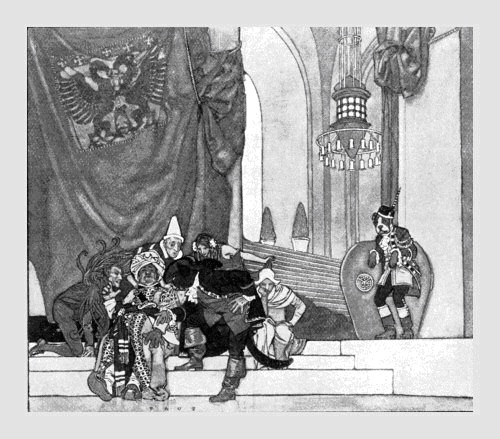

Nội dung thủ bút:
Ta đợi em từ ba mươi năm Cổng hoa phong nhuỵ hoài trăng rằm
Vũ Hoàng Chương 1970
Vũ Hoàng Chương: Làm thơ. Sinh ngày: 5-5-1916 tại Nam Định (Bắc Việt, theo giấy khai sinh). Năm sinh đúng: 1915, năm Ất Mão, tháng 4, mồng Một. Chánh quán: Làng Phù Ủng, tỉnh Hưng Yên (Bắc Việt)
Tác phẩm: Thơ say 1940, Vân Muội (kịch thơ) 1942, Mây (thơ) 1943, Vân Muội, Trương Chi, Hồng Điệp (kịch thơ) 1944, Thơ lửa (cùng với Đoàn Văn Cừ - Liên khúc 3),Tâm sự kẻ sang Tần (kịch thơ) 1951, Rừng phong (thơ) 1954, Hoa đăng (thơ) 1959, Tâm tình người đẹp (thơ Nhị thập bát tú) 1961, Trời một phương (thơ), Thi tuyển (Poèmes choisis) tựa của Simone Kuhnen de la Coeuillerie 1963, Lửa từ bi (thơ) 1963, Ánh trăng đạo (thơ) 1966, Bút nở hoa đàm (thơ) 1967, Cành mai trắng mộng (thơ) 1968, Nouveaux Poèmes (Tân Thi) 1970, Ta đợi em từ ba mươi năm (thơ) 1970, Loạn trung bút (tạp văn) 1970
Vũ Hoàng Chương Tiếng thở dài của phương Đông trầm mặc
“Ôi, Lý Bạch, Trang Chu đường chim nẻo Nguyệt Đời hoạ còn ta là theo vết người xưa…” (Vũ Hoàng Chương)
Nói đến Vũ Hoàng Chương là nói đến dòng thời gian xa thẳm trước tầm mắt, là nhắc nhở đến vùng bao la như lớp khí quyển vây quanh trái đất tạo nên ứ đọng với từng ngón hoài nghi, với niềm dằn vặt khôn nguôi giữa sự bứt rời và níu kéo trong một thể xác nửa mệt lả vì yêu thương, nửa giận hờn nỗi thất bại của tâm linh trước sự chia lìa của Thơ với Thực tại.
Sinh ra đời dưới một ngôi sao tốt, từ nhỏ, Vũ được bọc đùm trong nhung lụa, được dạy dỗ ở cả hai phía, Tây học và Hán học. Vũ đã hấp thụ văn học Tây phương đồng thời do sự giáo huấn của bà mẹ, Vũ cũng say mê Đông phương và sớm suy tư triết thuyết Lão, Trang với cổ thư Trung Quốc.
Sự ám ảnh của thời đại hoàng kim chìm khuất với vóc dáng chàng Tư Mã áo xanh trên bờ sông Dương Tử, hay khuôn mặt nàng ca kỹ bén Tầm Dương “tay ôm đàn che nửa mặt hoa”… đã làm phai mờ tất cả kích thước các nhà thơ lớn Tây phương: Hugo, Lamartine, Musset, Baudelaire, Verlaine, Rimbaud đang chiếu sáng trên vòm trời thi ca Việt Nam khoảng 1935-43 với từng người thơ chịu ảnh hưởng sâu đậm kỹ thuật, nhất là tư tưởng vay mượn của nền thi ca miền tóc vàng, tuyết trắng.
Vũ là tượng hình đứng cô liêu trong vòm trời quá khứ. Ánh sáng của ngọn hải đăng le lói giữa đêm khuya mịt mùng sóng vỗ, Vũ lắng nghe hồn mình trải rộng trên mỗi con nước đại dương và thầm ước sẽ tìm được trong sự luân lưu đó, chút hơi thở của người xưa vọng đến. Nhưng ánh sáng của ngọn hải đăng vẫn le lói hằng đêm và đại dương cứ luân lưu theo chu kỳ miên viễn, hơi thở của quá khứ trôi đi biền biệt không để lại vết tích gì trong vũ trụ bao la, có chăng chỉ còn lại niềm tưởng vọng giữa sự-sống-hôm-nay gửi về cõi-chết-hôm-qua bằng môi trường suy cảm. Vũ đã suy cảm và lựa chọn khổ đau, với đam mê huỷ diệt. Vũ khước từ cái công danh phú quý mà đời đã trao tặng sau những năm đèn sách, để tự dấn thân vào thế giới thi ca, tức là mang lấy nghiệp. Sự “đầu thai lầm thế kỷ” mà Vũ đã viết ra, hét to lên trong cơn mê loạn của thể xác, trong nỗi vò xé của tâm linh trước cuộc sống nghẽn lối, trước cơn bi phẫn của con chim bị trúng tên rã cánh, nhìn trời cao mà không vút lên được, nhìn trái ngọt mà không vừa an hưởng, nhìn thân phận trôi đi, trôi đi như ảo ảnh để nuối tiếc giấc mơ thành bướm thuở nào.
Thế đó, dòng sông với ngần ấy tê liệt, ngần ấy giận hờn trong một xã hội đốn mạt, trong một quốc gia nô vong, Vũ cảm thấy mình đã nhiễm độc và để giải độc, Vũ tìm quên trong chiều sâu của ảo giá, của men khói. Ở đó, Vũ đón nhận về phần mình tất cả đau thương, qua từng sợi khói lung linh, qua lời hò hẹn chênh vênh, qua tình yêu gục mặt, qua niềm tin đổ vỡ để thoát vào cảm thông với hơi thở mỏi mòn. Vũ tiếp thu những giá trị bi thương ấy, những nghẹn ngào câm tiếng ấy bằng niềm sảng khoái vỡ bờ. Vũ từ bỏ thực tại như từ bỏ chính bản thân. Vũ lững thững đi vào xứ Mộng. Trong cõi mông lung của tiềm thức, từng hình ảnh xa lìa, khắc khoải bám riết lấy suy tư, xiết chặt thân phận Vũ vào chiếc nôi bằng tơ có móc đầy gai nhọn. Sự lìa bỏ bản thân, lìa bỏ thực tại phải được coi như những chứng tích, mỗi ngày mỗi nối hằn như vết roi định mệnh.
Hành trình vào thế giới thi ca của Vũ, người ta không thể không xuyên qua bản chất thực thể của Vũ với tấm lòng rộng mở, với ý hướng chói loà chiếu rọi vào mỗi dòng, mỗi chữ để cùng đau, niềm đau tâm sự! Vũ, mẫu người thơ đặc biệt, không giống với bất cứ thi nhân nào đã và đang có mặt. Vũ làm thơ để cất lên lời chào, tiếng khóc. Vũ làm thơ để trối trăng ý tình, để tiếp nối hơi thở gửi từ kiếp trước. Cái đau, Vũ khóc ngất trong thơ không phải cái đau của Huy Cận với “Chàng là con một người mẹ hay sầu. Nên trọn kiếp mắt chàng thường đẫm lệ”. Không, không, cái đau của Vũ cao rộng và siêu thoát. Nó có đấy, nhưng nó cũng vô vàn xa vời như chiếc bóng hồ ly, như tiếng nhạc lênh đênh dội từ cung Hằng thăm thẳm. Phong độ trong thơ Vũ là phong độ của cánh chim hồng hộc bay suốt vạn dặm dài, qua bao nhiêu không gian ước định. Thơ Vũ hiện diện như loài hoa quý, ngạo nghễ rung rung từng cánh mỏng cho phấn hương tan vào thinh không gửi đến mọi phương trời, mọi góc cạnh tâm tư đang chới với trong mê muội, trong dục vọng thấp hèn giữa cuộc sống buông trôi.
Hành trình vào thơ Vũ, mỗi con người tự cảm thấy lâng lâng như lạc vào giấc mơ kỳ thú. Thời gian, không gian xáo trộn, quỷ với người là tình nhân, gỗ đá cũng mặc áo linh hồn. Nhưng muốn hiểu thơ Vũ đến cùng, người ta phải tìm hiểu cả cái dòng sống phức tạp xuyên qua từng khía cạnh ngọt ngào và cay đắng, đã làm Vũ chết điếng sầu đau, tê rời cảm xúc.
Tình yêu và đam mê
Đi vào tình yêu là đi vào nguồn vui đau khổ. Từ khung trời hy vọng đổ sang vùng địa ngục tối tăm. Từ ánh mắt sáng ngời do lửa yêu đương thắp sáng đến nấm mộ u uất dựng lên giữa cõi sống như một sỉ nhục. Khuôn mặt người đàn bà mang tên Kiều Thu mà Vũ đã ôm ấp mười năm, mười năm nhen nhúm với ước vọng, với chờ đợi não nề, với dặm dài mệt mỏi. Kiều Thu, Kiều Thu hỡi! Người đàn bà may mắn đã được Vũ khóc trong thơ, đã được Vũ vuốt ve với vần điệu gấm nhung, đã được Vũ tôn lên ngai thờ Nữ Sắc, nàng có biết chăng, dung nhan đó đã trở thành bất tử. Người đàn bà ấy giờ đây đang có mặt ở phương nào, đang ẩn mình trong góc cạnh nào của cuộc sống, sung sướng hay khổ đau, đã già hay còn trẻ, hãy ngẩng mặt lên đón nhận nơi đây lời chúc tụng.
Tình yêu mà Vũ đã gửi tặng lầm nơi không phải thứ tình yêu qua nhanh như gió thổi, như lằn chớp ngang trời. Nó day dứt sượng sùng. Nó tái tê cuồng dại đến nỗi Vũ phải kêu la:
“Yêu sai lỡ để mang sầu trọn kiếp Tình mười năm còn lại mấy tờ thư!”
Biết rằng thất bại và biết được giá trị khổ đau, Vũ muốn tìm quên bằng cách đắm chìm thân phận vào trời say, nhưng không được:
“Say đã gắng để khuây sầu lẻ gối Mưa, mưa hoài rượu chẳng ấm lòng đau Gấm thế nào từ buổi lạnh lùng nhau Vàng son có thay màu đôi mắt biếc? Tình đã rời đi riêng mình tưởng tiếc Thôi rồi đây chiều xuống giấc mơ xưa Lá, lá rơi nằm bệnh mấy tuần mưa Say chẳng ngắn những đêm dằng dặc nhớ…”. (Lá thư ngày trước, Mây)
Như thế đó, tình yêu đối với Vũ là hình phạt nặng nề hơn ân thưởng. Những khuôn mặt đàn bà đi qua đời Vũ, được Vũ nhắc đến trong tác phẩm, đều chập chờn như những bóng ma. Cô gái tóc vàng đến từ miền tuyết trắng hay ả ca kỹ nổi danh phòng Dạ-lạc cũng chỉ là hư ảnh. Vết thương tình ái làm Vũ nhức nhối đến bây giờ, trong buổi xế chiều của cuộc đời, vẫn là Kiều Thu. Nó là ung thư đục khoét ở chiều sâu cơ thể. Nó làm cho con người chết mỏi mòn vì ám ảnh, sầu đau. Vũ mang vết thương đó đi lang thang trên mọi nẻo đường đời như mang một số kiếp phụ thuộc.
“Trăng của nhà ai Trăng một phương Nơi đây rượu đắng mưa đêm trường Ở đêm tháng sáu mười hai nhỉ Tố của Hoàng ơi hỡi nhớ thương…”
Ngày 12 tháng 6 là ngày người yêu sang ngang. Sự dứt bỏ này làm tổn thương đến danh dự người trai ngoài hai mươi tuổi. Nhưng nàng bỏ ta không phải là hết. Ta vẫn mê nàng. Ta là gã si tình ngàn kiếp:
“Tháng sáu mười hai từ đây nhé Chung đôi từ đấy nhé lìa đôi Em xa lạ quá đâu còn phải Tố của Hoàng xưa Tố của tôi…”
Rồi Vũ thét ngất:
“Kiều Thu hề Tố em ơi Ta đương lửa đốt tơi bời mái Tây Hàm ca nhịp gõ khói bay Hò Xừ Xang Xế bàn tay điên cuồng Kiều Thu hề trọn kiếp thương Sầu cao ngùn ngụt mấy đường tơ khô Xừ Xang Xế Xự Xang Hồ Bàn tay nhịp gõ điên rồ khói lên…” (Mười hai tháng sáu, Mây)
Niềm bi thảm của tình yêu cứ kéo lê trong tâm linh Vũ như vết hằn khổ nhục. Khuôn mặt và vóc dáng người đàn bà đó đã gây nên ấn tượng khốc liệt làm Vũ choáng váng đến run sợ. Chính vì không đủ can đảm, Vũ chạy trốn thất vọng đi tìm đam mê để giết nỗi buồn dằng dặc. Vũ dìm đời mình vào dòng sông Mê khoái cảm. Vần điệu trong thơ Vũ ngất ngư như ủ say men khói, lãng đãng lạc vào cõi u huyền mộng mị.
Thi phẩm Mây chào đời năm 1943 là thi phẩm sáng chói nhất của Vũ, vì ở giai đoạn này, Vũ đã sống trọn vẹn với hơi thở thi ca, với quê Nâu lửa đóm bằng máu và hồn. Vũ thiêu dần thân xác chẳng những với ngọn dạ đăng chập chờn hoa bấc mà còn đắm say tiếng cầm ca, sênh phách rộn ràng trong từng đêm dài cửa Ô đau khổ. Vũ muốn xé tan thân phận mình và tiêu huỷ cái số kiếp bi đát để tìm về giải thoát, sự giải thoát nào đó có mầu nhiệm hay không, Vũ chẳng cần biết. Vũ nhìn chòng chọc vào cõi Hư Vô mong soi tỏ bản chất mình qua đốm lửa lung linh mờ ảo.
Ngày rồi đêm, khúc vui, cung buồn cứ đuổi theo nhau chạy luồn trong huyết quản Vũ để biến Vũ thành một tù nhân của đam mê vọng tưởng. Niềm thương nhớ chắc chẳng bao giờ nguôi, từng nỗi khắc khoải, phân vân hiện hình trong thơ Vũ như chứng minh sự buông thả lênh đênh của một tâm hồn đã quá no đầy oan nghiệt:
“Phơi phới linh hồn lỏng khóa then Say nghe giọt nhựa khóc bên đèn Mê ly cả một trời Đông Á Sực tỉnh trong lòng nấm mộ đen…”. (Hơi tàn Đông Á, Mây)
Ảnh hưởng và đối thoại
Tâm hồn Vũ là những sợi dây tơ được căng thẳng trên vòm trời ảo mộng. Một hơi gió, một chớp mắt, một va chạm cỏn con cũng đủ làm cho đường dây rung lên nức nở. Vũ treo cuộc sống của mình trên những sợi dây mong manh đó và để mặc cho âm hưởng reo vang tự đáy lòng cô độc. Vũ không nhìn vào cuộc đời có đây để tìm vị trí thực thể của mình. Vũ xoay mặt đối diện với quá khứ, đối diện với những ước mơ tự ngàn xưa xa vút. Sự đối diện này tạo cho Vũ niềm tin tưởng vì Vũ cho rằng đã tìm thấy ở vóc dáng dĩ vãng, cái-qua-rồi, hình ảnh bản thân hiện rõ trong lăng kính tâm tư. Vũ vẽ lại tiền thân bằng vần điệu. Cả một vòm trời nặng trĩu mây mù, Vũ dùng tâm linh chiếu sáng để nối lại đường dây giao cảm, để khoả lấp sai biệt của khoảng cách vô cùng rộng lớn. Vũ mơ giấc mơ thành bướm của Trang Chu và dõi theo từng bước chân khoảng khoát của Lý Bạch, Đỗ Phủ, Thôi Hiệu, Bạch Cư Dị. Vũ say mê bờ liễu Hàng Châu lả lướt, hoặc sóng nước xanh rờn vỗ bên Tầm Dương, hoặc nét nguy nga, cao trọng của lầu Hoàng Hạc ngàn năm sững bóng. Vũ chịu ảnh hưởng sâu đậm của nền thi ca Trung Quốc thuở thịnh Đường và mê triết thuyết Vô Vi của Lão Tử. Cái “Có” cái “Không” phải chăng là mầu nhiệm? Đêm đêm Vũ thường đốt đèn lên trang sách hỏi người xưa về Ý Thức Huyền Vi để mong tìm ra lối thoát cho bản ngã, tài năng:
“Phải chăng muôn kiếp nặng nề Từ Hư Không lại trở về Không Hư Lẽ nào mộng cả thôi ư? Người ơi! Giọt bể chứa dư tang điền…” (Bài ca siêu thoát, Rừng phong)
Không tin vào giá trị của cuộc sống, Vũ nghiêng về hoài cảm. Từ hoài cảm tiến tới hờn giận sự hiện diện của thực tại nhức nhối, nhơ bẩn. Vũ vượt lên, thoát mình vào ảo giác, trộn lẫn cái “Còn”, cái “Mất”, cái “Có”, cái “Không” để đi vào quan niệm bi thương, giận dỗi. Vũ vẫy vùng trong mớ hư ảnh, kêu gọi từng hình thể xa vời trở về đối thoại.
Vũ cho rằng, cuộc đời hiện hữu không phải là chỗ đứng của mình nên thay vì đối thoại với người sống, Vũ trò chuyện với những vóc dáng mơ hồ chạy lởn vởn trong tiềm thức, hay ẩn hiện sau mỗi cơn say dài men khói. Từng chấm sáng lân tinh xoay quanh đốm lửa hắt hiu toả hương mê hoặc. Vũ gọi về tâm sự! Vũ dìu nhẹ thời gian trở ngược vòng vận chuyển. Vũ mơ về thời đại hoàng kim xênh xang nhạc ngựa, gỗ, đá giao duyên. Vũ đối thoại với linh hồn, ma quỷ bằng lời thơ tiếc nuối:
“Khí thiêng chừng sớm lìa nhân thế Dương thịnh rồi chăng Âm đã suy Quạnh quẽ thu phân thơ bặt tiếng Lầu hoang chìm dấu cỏ hồ ly
Còn đâu thuở ấy niềm khăng khít Quỷ với người chung một mái nhà Trăng bạn, hoa em trầm mối lái Đèn khuya dìu dặt bóng yêu ma…” (Cảm thông, Mây)
Ma quỷ, Hồ ly đối với Vũ như những người bạn chí thiết. Vũ trao đổi tâm sự với chúng như trò chuyện với các danh nhân, cao sĩ. Vũ mặc áo linh hồn cho gỗ, đá, cỏ, cây.
“Ai đó – Phải chăng hồn cỏ cây Bấc thơm dầu quánh nhựa hây hây Dầu vơi bấc mỏng manh gây Bước chân vào bợ ngợ Hoa đèn lung lay…” (Nửa truyện Hồ ly, Mây)
Nhưng niềm cảm khái của Vũ không nhất thiết phải đứng nguyên ở vị trí tiếc thương quá khứ với giấc mộng đẹp qua đi không bao giờ trở lại, đôi khi, nó vùng lên hào khí. Sự vùng lên để chứng tỏ một thái độ và cũng để tìm không khí mới cho cuộc đối thoại, vì đối thoại không hẳn là phải chung thuỷ với một lập luận, chính thực để hiểu thêm những điểm khác biệt với chính mình. Từ truyện người tráng sĩ Kinh Kha với đường gươm lỡ dở không thành việc lớn, với tiếng sáo u buồn của Cao Tiệm Ly tiếc thương người bạn đời, đến vị anh hùng ái vải đất Quy Nhơn đã làm đẹp lòng Vũ bằng vần điệu gieo vàng, chuốt ngọc.
“Hãy dừng lại thời gian Trả lời ta! Có phải, Dưới vầng nguyệt lạnh lùng quan ải Dưới vầng dương thiêu đốt quan san Lớp hưng phế xô nghiêng triều đại… Mà chí lớn dọc ngang Mà nghiệp lớn huy hoàng Vẫn ngàn thu còn mãi Vẫn ngàn thu người áo vải đất Quy Nhơn…” (Bài ca Bình Bắc, Hoa Đăng)
Đó, tâm hồn Vũ rung lên từng cung bậc uyển chuyển, nhịp nhàng. Tình yêu, hồi tưởng, đam mê, đau khổ, hờn giận đã bủa vây dòng sông nội tâm Vũ, biến Vũ thành một biểu tượng đặc biệt trong thế giới thi ca hiện đại.
Niềm cô đơn và dung nhan
Mỗi con người là một hoang đảo, nếu không có sự liên hệ do cuộc sống tạo nên để ràng buộc nhau trở thành xã hội, quốc gia hay nhân loại. Từ thuở sơ sinh, thanh âm thứ nhất chào đời là tiếng khóc chứ không phải nụ cười. Cái vòng sinh, lão, bệnh, tử như mỗi dây oan nghiệt thắt chặt mỗi cá nhân vào nghiệp chướng không để ai thoát khỏi. Vũ vào đời với từng bước nhỏ nhẹ, với thân phận tiền oan. Màu áo xanh Tư Mã, Vũ khoác lên vai mỏng manh như một biểu hiệu cố định, đồng thời Vũ cũng mang luôn niềm cô đơn giữa đời sống – một đời sống nô vong – đang đuổi theo sự an hưởng vật chất trước mặt, hay gục đầu trong vũng lầy hoàn cảnh. Vũ ngẩn ngơ giữa cõi đời với túi hành trang chất đầy hoài vọng lẫn bi thương. Vũ hoài vọng đến một khung trời bỏ ngỏ có bướm vàng, lá thắm tình tự suốt bốn mùa giao hưởng, ở đây, con người được tự do trút bỏ mọi câu thúc hình hài, nhởn nhơ giữa muốn tiếng đàn ca, với thiên tiên vui múa Nghê Thường. Vũ có thể tâm sự trực tiếp với “gỗ danh sĩ”, “đá thuyền quyên” như thuở nào trái đất mới hình thành mầm sống. Nhưng Vũ đã sinh ra giữa thời đại cơ khí, giữa hoàn cảnh phức tạp của xã hội Việt Nam nô lệ, nên hoài vọng và niềm bi thương ấy bị dồn nén vào trong để kết tụ thành khối đau buồn dằng dặc. Vũ nhìn lên vòm cao rồi cúi mặt xuống đất. Vũ không tìm thấy lối thoát ngoài thi ca. Vũ cô đơn. Mọi cánh cửa đều khép chặt trước mặt. Ba chiều không gian đã đóng kín, Vũ đành đốt tâm tư để mở một chiều riêng cho mình. Ấy đó, niềm cô đơn mà Vũ đã mang trọn kiếp người bật khóc trong thơ:
“Ai biết gì đâu một cuộc đời Nhớ thương hờn hận chẳng hề nguôi Chẳng thương xuân sớm phai màu tóc Chẳng nhớ mình đang sống kiếp người Chẳng đắp non cao hờn chót vót Chẳng thương mà biến hận đầy vơi Hỏi chi sự nghiệp cùng thân thế Sông núi – kìa xem – đã lở bồi…” (Giấc mơ tái tạo, Trời một phương)
Từ hờn, hận Vũ đi vào bi phẫn:
“Ai đó mách giùm ta với Quần gót thế nhân như đàn quạ kia chăng Hay như mây cao đơn chiếc cánh chim bằng Ấp úng cân đai hề trôi giam tài năng Vỡ mộng buông câu hề kho trời gió trăng…” (Tuý hậu cuồng ngâm, Mây)
Chính vì cô đơn quá đỗi nên Vũ bi quan, muốn rẫy bỏ nguồn sống đi tìm dung nhan cõi chết. Vũ phác hoạ cõi chết như một đổ vỡ toàn diện. Con người, sự vật mất hẳn. Ý thức về cõi chết là ý thức thực tế: mỗi người đều muốn có được cái chết yên lành cho riêng mình. Vũ không nghĩ thế. Vũ hình dung cõi chết như huỷ diệt, một tai nạn hãi hùng khủng khiếp với phi thuyền gãy lái, với trận lụt Hồng Thuỷ do cơn mưa đổ tự trời cao không bao giờ tạnh, hoặc cái chết do chính tim óc mình đòi ly khai với thể xác. Cõi chết mà Vũ tin rằng không ai được cứu rỗi dù Ma Vương hay Phật Như Lai, dù quỷ Sa-tăng hay Chúa Trời! Các vị thần linh đều bất lực vì cái chết này do chính con người tạo ra, con người phải chấp nhận hậu quả. Nói đến cái chết là nói đến niềm hoài nghi cuộc sống. Vũ nói về nó cũng tha thiết, cũng chìm đắm như nói chuyện yêu thương. Một đôi khi sự giả tưởng đưa suy nghĩ đi quá trớn, phóng đại ý nghĩa thực tế, mặc dầu trong thực tế có đôi lúc ngẫu hợp, nhưng nó không mang giá trị tuyệt đối. Nó cần thời gian và chứng nghiệm.
Vậy cõi chết Vũ hình dung thấy, phác hoạ ra, chỉ là ảo tưởng, nếu vạn nhất có thật, chắc chắn không phải là cõi chết con người thèm khát hay tình nguyện. Có chăng, nó chỉ liên hệ đến một mình Vũ với ưu tư thầm kín:
“Cả trái tim tôi Cũng đòi biệt thế Nó quyết đi tìm Thượng Đế Trên con đường không giới hạn bằng tiếng khóc trong nôi Và điếu văn trước mồ Nó hy vọng sẽ đích thân làm nhạc trưởng Đánh nhịp tưng bừng cho nước lửa hoà âm trắng đen hợp xướng Cho bản đồng ca ảo tưởng Hiện hữu vang lừng sân khấu Hư Vô…” (Thản nhiên, Trời một phương)
Và cơn mưa không bao giờ tạnh:
“Còn mưa rồi sẽ đến vô cùng Khối nước đè lên bẹp Thuỷ cung Ngũ đại dương thành tên gọi hão Năm châu vùi xuống đáy mồ chung”. (Kiềm toả, Trời một phương)
Sự bừng tỉnh và ý thức khổ đau
Sau mấy chục năm đằng đẵng, Vũ ngụp lặn trong hoài vọng và ước mơ thảng thốt mong tìm siêu thoát. Hình ảnh quá khứ trôi lều bều với dư âm buồn thương lãng đãng ở cuối trời mộng tưởng. Vũ khóc đã khô cong nguồn lệ. Vũ ôm bên lòng một mối hận cùng tháng năm cách trở. Màu áo xanh năm trước đã tàn phai ý mùa Tư Mã. Bến Tầm Dương nào đó, lênh đênh dăm bảy con thuyền nát, vài nàng ca kỹ già của Bồ Tùng Linh thôi về dưới mái Liêu-Trai. Cảm thông ngàn xưa vướng mắc, Vũ bừng tỉnh và nhận thức cuộc sống với giá trị thực thể của nó đi theo nhịp tiến hóa. Vũ không phải sống, phải ăn, phải thở, phải chịu nhiều phiền muộn về vật chất như mọi người. Vũ đau đớn tháo gỡ từng mảnh xiêm tàn vấn vương tâm tưởng. Vũ nhìn thẳng vào cuộc sống ở mỗi góc cạnh suy tư. Vũ chấp nhận thực tại tức là Vũ đã nhìn rõ vị trí kiếp người. Do đấy, lời và ý trong thơ Vũ đã chuyển hướng. Nó trình bày những hình ảnh mới với thể thơ Nhị thập bát tú.
“Cánh tay đô thị vươn dài Báo hoa cọp gấm tàn phai mộng rừng Một thời hương sắc trên lưng Đổ theo dòng suối rưng rưng bóng tà” (Rừng hết mùa thiêng, Nhị thập bát tú, Tập 2)
Hoặc:
“Dấu mũ trên chữ A Là chim bay lộn ngược Trên nền giấy trắng bao la Trùng dương dịu dàng in lấy bóng Chim bay dìu mây bay… .................... Hoả sơn cười sặc sụa Rung chuyển vòng đai biển Thái Bình Một lần nữa uốn cong lưỡi lửa Ngùn ngụt thi nhau tập đánh vần Một phụ âm và hai nguyên âm…” (Khai sinh, Trời một phương)
Vần và ý thơ rất mới chẳng những đối với Vũ mà còn làm bỡ ngỡ người quen đọc Vũ với hàng thơ đẹp, reo vang như tiếng vó ngựa đập lưng đèo. Nhưng không phải cứ đổi mới, cứ thoát xác là xong nhiệm vụ, là tước bỏ được mặc cảm. Vũ càng đi sâu vào cái mới bao nhiêu thì niềm khổ đau lại dâng lên bấy nhiêu. Ý thức khổ đau không buông tha con người đã quá chiều ước vọng. Trong cõi mông lung của Vô Cùng, Vũ lại mập mờ nhìn thấy hình ảnh mình thất thểu trên tấm màn vân cẩu. Thời gian cứ trôi bình thản theo nhịp chuyển dịch của Vũ Trụ. Con người cứ mòn mỏi theo tháng năm vô nghĩa. Sự góp mặt tạm bợ này Vũ đã biết, đã suy luận về nó rất nhiều. Bởi vậy, Vũ vẫn coi nguồn khổ não như ân sủng thiêng liêng và giá trị cõi sống không sao thoát được vùng kiềm tở của bẩy dây tình oan nghiệt. Vũ đối diện với lửa bấc hằng đêm để soi tỏ bản thân trước số phận con người lê thê bào ảnh. Vũ uống từng giọt mật đắng chảy qua tâm trí, ngấm vào huyết quản làm khô dần ý sống. Vũ giận dỗi, vùng lên nắm chặt lấy khổ đau mà nguyền rủa. Nhưng tiếng thơ oán hờn vẫn vang lên nhịp điệu thê thiết ngàn kiếp không phai:
“Đo màu mây sớm nét mưa chiều Đo cả hơi đàn cả tiếng tiêu Con số ra tay đè nén mãi Con người phận mỏng đến bao nhiêu”. (Phương trình số phận, Nhị thập bát tú, Tập 2)
Con người phận mỏng lắm nếu đem so với phương trình vũ trụ. Con người chỉ là “hạt cát bên sông Hằng”, cái chớp mắt, cái vi-ti-sinh-vật đối với thế giới bên ngoài. Khoa học đã chứng nghiệm sự thực bằng phát minh, bằng con số bắt mọi người chấp nhận. Vũ tức giận sự lũng đoạn của khoa học trong địa hạt tâm linh, chính vì vậy, Vũ phải mang ý thức khổ đau, có lẽ, tới khi vắng mặt!
Tiếng thở dài và ý niệm giải thoát
“Từ khi trái đất ra đi Lệ chia phôi đã xanh rì trùng dương…”
Thơ Vũ là tiếng thở dài của phương Đông trầm mặc. Tiếng thở dài đó cất lên giữa vòm trời rất đỗi buồn thương, ray rứt trong mỗi vần điệu. Sau những cố gắng đi tìm cho chính mình luồng sinh khí mới, nếp suy cảm mới, rốt cuộc, tiếng nói của Vũ vẫn nguyên vẹn là niềm u uất, mệt mỏi, chán chường! Vũ muốn dìm chết dĩ vãng trong Trời-Quên-Lửa-Khói, nhưng sau mỗi cơn say tự dưới đáy vực, Vũ cảm thấy tâm hồn mình càng lún sâu xuống Địa-Ngục-Quá-Khứ. Nó quật ngã Vũ lúc nào nó muốn. Nó là định mệnh. Nó bám riết lấy Vũ với dằn vặt trường miên, với hờn thương vô độ. Nó nhập vào thơ Vũ. Nó chứng minh sự phai tàn của một thế hệ. Nó ghi dấu thời gian như vết xe lướt qua mặt đường lầy lội. Thật vô ích và xiết bao đau đớn, đêm đêm nhìn nhớ thương toả dài theo lửa khói ròi chìm lắng vào Hư-Vô câm tiếng.
Thơ Vũ là cơn đau đứt nối với số phận riêng lẻ. Thơ Vũ không chuyên chở những món hàng hợp thời trang cùng chân dung thê thảm của chiến tranh có đây, hoặc tỏ bày thái độ trước cuộc đời hôm nay. Thơ Vũ đơn côi giữa nguồn sống đang dâng trùng trùng lớp lớp. Chính vì thế thơ Vũ tồn tại.
Niềm chia ly cách trở do núi sông, nhân thế cộng với tháng năm tủi nhục, Vũ đi tìm vùng an nghỉ cho tâm linh. Vũ muốn được giải thoát bằng ý niệm siêu hình, bằng cách phóng hồn vào hư-không-tuyệt-đối. Vũ đi tìm Đạo. Vũ muốn dứt bở cái xác phàm hệ luỵ bởi cơm áo, yêu thương, hờn giận này đi. Cõi sống làm Vũ chán ngán. Vũ đã uống nó đau khổ, hút say phiền muộn! Cuộc đời nào đó có gì cho ta mong đợi?
“Bụi đỏ phai màu nhân sự Trang đạo lý thơm tho từng nét chữ Mười ngón tay dan díu cõi Vô hình Xác tục lâng lâng chờ cơn gió hiển linh Ai xưa quên ngày tháng hát vong tình Kìa phương Nam, hoa nở ngát lời kinh Dằng dặc trầm luân mấy độ Thuyền ta trôi hề ý ta bay Sương in bóng nguyệt không mà có Hay có mà không nhỉ gã say?”… (Bài ca siêu thoát, Rừng phong)
Ngọn lửa Từ Bi cháy ngùn ngụt giữa đường nhân thế làm sáng ngời cửa Phật, soi đường cho Vũ tìm thấy chân lý cuộc đời. Vũ dâng hiến linh hồn mình cho đấng Thích Ca, cho cõi Vô-Cùng-Siêu-Thoát. Từ lâu, Vũ nghe được tiếng cá thở than, hôm nay, Vũ đã sõi tiếng rừng cây, Vũ chỉ chờ ngày hiểu được bề sâu của lòng đất là thoả nguyện ước mơ cuối đường.
“Nghe được từ lâu cá thở than Hôm nay mới sõi tiếng cây ngàn Bao giờ tôi hiểu sâu lòng đất Là thấy đường lên cõi Niết Bàn”. (Nhị thập bát tú, Tập 2)
Là đây, niềm hoài vọng của con người Thơ qua bao nhiêu hệ luỵ giờ đây còn lại người gì? Cuộc đời có, không, không, có, nào ai biết được, hay cũng chỉ như:
“Ca trùng lửa đóm Cũng hoàn phản hư không dù lăng ngà cỏ khâu…” (Tụng kinh kha)
°
Cách đây 27 năm, vào buổi tối đầu thu, thành phố Hà Nội vừa lên đèn. Gió từ bờ Hồng Hà thổi nghe thấm lạnh. Những chiếc lá đầu mùa đã thả xuống lề đường làm duyên cho thành phố. Nguyễn Đức Nùng, người bạn cùng trường đưa tôi đến gặp Vũ Hoàng Chương tại một căn nhà cổ, sau đến Bà Kiệu. Đến nơi tôi gặp thêm Đinh Hùng, Lê Trọng Quỹ cùng vài ba bạn khác. Căn nhà thấp, rất thấp, tối om om. Đó đây từng ngọn dạ đăng cháy lập lờ không soi tỏ mỗi khuôn mặt. Tôi được giới thiệu với Vũ và các bạn. Hình ảnh đầu tiên ghi nhận ở Vũ, đến hôm nay còn in rõ trong tôi như vết tích không phai với thời gian, đó là một thanh niên mảnh mai chìm khuất dưới bộ bà ba trắng đã ngả màu, nằm nghiêng bên ngọn dạ đăng ma quái. Vũ đưa mắt nhìn tôi mà tôi tưởng như Vũ nhìn vào khoảng trống. Đôi mắt ấy toát ra ánh sáng kỳ lạ. Nó lóe lên giống tia chớp rồi vụt tắt giữa màu mây nặng trĩu hơi mưa. Vũ nằm bất động như thiếp vào cơn mơ bỏ dở. Hương nha phiến chập chờn quyến rũ. Lát sau nghe chừng đã hả cơn say, Vũ mời tôi vào thăm quê Nâu. Tôi từ chối. Vũ nhếch môi cười – “Toa” không chịu vui với anh em thì đến đây làm gì? Tôi định trả lời, tôi đến vì mê thơ chứ không vì mê khói. Nhưng Nùng đã vội nói – “Moa” biết, nó chỉ thích thể thao và con gái thôi. Mặc nó! Tôi bẽn lẽn ngồi như cậu bé bị kể tội. Lê Trọng Quỹ nằm gần đây, cất tiếng ngâm thơ. Giọng ngâm của Quỹ sang sảng, ấm lạ thường. Tiếng thơ dìu theo khói thuốc gây cho tôi ấn tượng là lạ vì chưa một lần được biết. Quỹ ngâm bài “Mười hai tháng sáu” trong tập Mây của Vũ, do nhà Đời Nay vừa xuất bản. Chính thi phẩm này đã đưa Vũ lên tột đỉnh của trời Thơ thuở ấy. Vũ gõ que sắt vào thành chén giữ nhịp, đôi mắt nhắm lại như không muốn thấy sự vật xung quanh. Tôi biết Vũ đang trở vào giấc ngủ mười năm lỡ dở. Tiếng ngâm của Quỹ vút lên nhưng bị ngăn trở bởi kích thước không gian nhỏ hẹp nơi đây nó dội lại, trở thành chua chát, não nề. Tôi choáng váng rồi thoát mình nhập vào không khí cuồng say lúc nào chẳng biết.
Từ buổi ấy, chúng tôi là bạn. Chúng tôi thường gặp nhau, nhưng không một lần, Vũ mời tôi chung say nữa. Tôi mê thơ Vũ đến nỗi thuộc hết tập Mây lúc nào không hay. Tôi còn thích Vũ ở lối ăn mặc đặc biệt. Vũ thường mặc áo gấm màu lam, đi giày ta, mang khăn xếp, tay cầm quạt và luôn luôn có đem theo cuốn Liêu trai chí dị của Bồ Tùng Linh bằng chữ Hán. Vũ đi thất thểu, chậm rãi với phong độ nho gia. Sau đó ít lâu Vũ về quê nhà ở Nam Định.
Bẵng đi một dạo, cho tới năm kháng chiến thứ ba, tôi mới gặp Vũ tại Đống Năm thuộc tỉnh Thái Bình, nhân buổi họp mặt Văn Nghệ. Vũ vẫn thế, chiến tranh không làm Vũ đổi thay từ bản thân tới suy nghĩ. Chiếc áo gấm năm xưa đã phai màu gió bụi trường chinh, nhưng phong cách Vũ vẫn y nguyên. Trong thời gian ấy, Vũ làm thơ một phần để tỏ bày thái độ, một phần để nguôi ngoai tâm sự.
“Mới hôm nào gác Dì Năm Lời thơ ai đẹp tiếng cầm ai say Tang thương một cuộc ai bày Giấc Thiên Thai để trắng tay Lưu Thần Xa Cố đô vắng cố nhân Trái tim mềm trĩu hai lần nhớ thương…”
Lần này chính Vũ ngâm cho tôi nghe trong một quán nước bên bờ đê. Giọng ngâm của Vũ ấm đục, thê thiết như vướng nghẹn bởi sương khói quê Nâu. Vũ ngâm thơ như khóc, như hờn tủi, như cơn đau xé ruột.
Qua những giờ giao cảm ngắn ngủi đó, chúng tôi lại chia tay với bùi ngùi cách trở, kháng chiến vẫn kéo dài bước chân tuổi trẻ.
Đến năm 1951, chúng tôi lại thấy nhau ở Hà Nội. Vũ cho biết đang viết vở kịch thơ Tâm sự kẻ sang Tần. Trong vở kịch thơ này Vũ đã gửi gấm tâm sự mình không ít xuyên qua nhân vật Cao Tiệm Ly. Vũ đã viết 6 vở kịch thơ, mới in 4 và 14 thi tập. Trong số có tập Cảm thông do Nguyễn Khang dịch sang Anh ngữ và Nhị thập bát tú được Simone Kuhnen de la Coeuillerie dịch sang Pháp ngữ với lời tựa của thi hào Ý Lionello Fiumi, cùng một tuyển tập cũng do S.K. de la Coeuillerie dịch với minh hoạ của Suzanne Bomhals và phụ bản của Ysabel Beas. Cuốn Tuyển tập được giáo sư André Guimbretière đề tựa. Thơ Vũ đã vượt biên giới để hoà mình với thi ca thế giới.
Nhưng viết về Vũ mà bỏ quên hình ảnh người đàn bà mang tên Oanh – người bạn đời của Vũ – kể như thiếu sót. Người đàn bà ấy nổi danh tài sắc một thời – đã cùng lênh đênh, chìm nổi theo số phận Vũ. Người đàn bà ấy có tình thương yêu vô lượng, có sức chịu đựng phi thường. Sự nghiệp của Vũ hôm nay được thành quả, một phần cũng bởi lòng hy sinh cao cả và ý chí sắt son của tâm hồn khả kính ấy. Trong suốt mười mấy năm thi phẩm, Vũ chỉ nhắc đến tên Oanh có một lần, trong tập Hoa đăng. Nhưng thật ra, bóng dáng ấy phảng phất có mặt trên mọi trang thơ vì nó đã dính liền vào thịt da, vào huyết mạch Vũ từ lâu rồi. Vũ rất nhạy cảm nên dễ giận hờn. Thực phẩm trần gian quá đắng cay, Vũ phải ẩn nấp vào trời Mây để tìm hương vị ngọt ngào cho cuộc sống riêng tư.
Việc nhận diện Vũ Hoàng Chương không mấy khó. Cái khó là viết về người bạn thân. Tôi băn khoăn, phân vân trước khi viết vì tự nghĩ mình không đủ sáng suốt để tìm hiểu Vũ với cái nhìn vô tư chăng?
Nhưng đến lúc này, tôi cảm thấy vơi nhẹ đôi vai.
Trích thơ Vũ Hoàng Chương
Nửa truyện hồ ly
Giàn dưa mưa lất phất Mênh mông sầu xứ đêm dài Hư vô động tiếng giày ai Mình ta buồn dặc dặc Say giữa hai tờ Liêu Trai Rún rẩy hoa đèn rung ngọn bấc Không gian đàn mãi tiếng giày ai Dầu cạn lưng chừng phao Sợi nhỏ thon mềm dáng liễu Hài son phơi phới lửa đào Khói biếc màu xiêm yểu điệu Ai đó – phải chăng hồn cỏ cây Bấc thơm dầu quánh nhựa hây hây Dầu vơi bấc mỏng manh gầy Bước chân nào bợ ngợ Hoa đèn lung lay Ai đó – phải chăng hồn cỏ cây Mộ vắng lầu hoang ngơ ngác sợ Cùng đêm nương về đây Nửa truyện Hồ Ly trang sách giở Lung linh tiếng giày.
Dâng tình
Bốn trời sương lạnh Đường xanh bóng trăng Lửa đào lung lay phất phới Thi nhân ôi xin dừng bước lại Đây Hàng Châu thường mơ ước đêm Hoa Đăng Đêm Hoa Đăng đường xanh bóng trăng Đêm Hoa Đăng đèn quanh lối xóm Đây cầm ca người mộng gái xưa Kim Lăng Hãy dừng đây Chàng Say Mà điên cuồng lơi lả Đón muôn đời thanh sắc ngã trong vòng tay Nhịp trúc buông khoan Sóng tơ dồn chậm Môi nồng tươi da mịn ấm Liễu xinh xinh thoa dáng liễu cong đôi nét mày Lũ chúng em chờ Chàng qua chín kiếp Tình giang hồ phong nhuỵ vẫn nguyên hương Rượu dâng nồng đây son phấn mười phương Khói lên biếc và đây hồn tứ xứ Trên cánh Nhạc đê mê Chàng hãy ngự Đàn tơ mây theo phách gỗ trầm hương Nhịp lời ca lơi lả bóng nghê thường Âm điệu sẽ ru Chàng say đến cuối Lũ chúng em ca nhi Đón dâng Chàng một buổi Nỗi yêu mê cuồng dại nén từ lâu Rồi mai đây Chàng rong ruổi Thuyền buộc sông mưa Ngựa dừng trăng khuyết Tình nhân thế chua cay người lịch duyệt Niềm giang hồ tan tác lệ Giang Châu Xin bẻ thuyền quay hướng Xin giục ngựa quay đầu Về cùng chúng em Buồng xuân chờ cửa ngỏ Khóm trúc đợi xanh màu Họp cùng chúng em Có nàng tiên má hồng nâu Giúp đôi cánh biếc dâng sầu lên khơi Hãy dừng đây Chàng Say ơi Cùng lận đận bên trời một lứa Đêm Hoa Đăng vắng chàng thoi thóp lửa Tiếng đàn xênh rời rạc khúc Thiên Thai Hãy dừng đây sương gió lạnh bên ngoài.
Một phút ngừng say
Bấc trĩu hoa đèn nhựa úa nâu Phai say nằm khóc mộng ban đầu Bước chân song sóng vòng tay mở Dạo ấy người xưa xa lắm đâu Chớm nụ tiếc cho tình quá ngát Mà thương trời bể quá cao sâu Tiếc thương lẻn khói vào tâm trí Mưa gió tàn đêm lộng quán sầu.
Lá thư ngày trước
Yêu một khắc đế mang sầu trọn kiếp Tình mười năm còn lại mấy tờ thư Mộng bâng quơ hò hẹn cũng là hư Niềm son sắt ngậm ngùi duyên mỏng mảnh Rượu chẳng ấm mưa hoài chăn chiếu lạnh Chút hơi tàn lay lắt ngọn đèn khuya Giấc cô miên rùng rợn nẻo hôn mê Gió âm tưởng bay về quanh nệm gối Trong mạch máu chút gì nghe vướng rối Như tơ tình thắc mắc buổi chia xa Ngón tay run ghì nét chữ phai nhoà Hỡi năm tháng hãy đưa đường giấc điệp Yêu mê thế để mang sầu trọn kiếp Tình mười năm còn lại chút này đây Lá thư tình xưa nhớ lúc trao tay Còn e ấp thuở duyên vừa mới bén Ai dám viết yêu đương và hứa hẹn Lần đầu tiên ai dám ký “Em Anh” Nét thon mềm run rẩy gắng đưa nhanh Lòng tự thú giữa khi tìm trốn nấp Mươi hàng chữ đơn sơ ô ngượng ngập E dè sao mươi hàng chữ đơn sơ Màu mực xanh tươi ngát ý mong chờ Tình hé nụ bừng thơm trong nếp giấy Ôi thân mến nhắc làm chi thuở ấy Đêm nay đây hồn xế nẻo thu tàn Khóc chia lìa ai níu gọi than van Ta chỉ biết nằm nghe tình hấp hối Say đã gắng để khuây sầu lẻ gối Mưa mưa hoài rượu chẳng ấm lòng đau Gấm the nào từ buổi lạnh lùng nhau Vàng son có thay màu đôi mắt biếc Tình đã rời đi riêng mình tưởng tiếc Thôi rồi đây chiều xuống giấc mơ xưa Lá lá rơi nằm bệnh mấy tuần mưa Say chẳng ngắn những đêm dằng dặc nhớ Trăng nào ngọt với duyên nào thắm nở Áo xiêm nào rực rỡ ngựa xe ai Đây mưa bay mờ chậm bước đêm dài Đêm bất tận đêm liền đêm kế tiếp Yêu sai lỡ để mang sầu trọn kiếp Tình mười năm còn lại chút này thôi Lá thư xưa màu mực úa phai rồi Duyên hẳn thắm ở phương trời đâu đó.
Mười hai tháng sáu
Trăng cửa nhà ai trăng một phương Nơi đây rượu đắng mưa đêm trường Ờ đêm tháng sáu mười hai nhỉ Tố của Hoàng ơi hỡi nhớ thương
Là thế là thôi là thế đó Mười năm thôi thế mộng tan tành Mười năm trăng cũ ai nguyện ước Tố của Hoàng ơi Tố của Anh
Tháng sáu mười hai từ đấy nhé Chung đôi, từ đấy nhé lìa đôi Em xa lạ quá đâu còn phải Tố của Hoàng xưa Tố của tôi
Men khói đêm nay sầu dựng mộ Bia đề tháng sáu ghi mười hai Tình ta ta tiếc cuồng ta khóc Tố của Hoàng nay Tố của Ai
Tay gõ vào bia mười ngón rập Mười năm theo máu hận trào rơi Học làm Trang Tử thiêu cơ nghiệp Khúc Cổ Bồn Ca gõ hát chơi
Kiều Thu hề Tố em ơi Ta đang lửa đốt tơi bời Mái Tây Hàm Ca nhịp gõ khói bay Hồ Xừ Xang Xế bàn tay điên cuồng
Kiều Thu hề trọn kiếp thương Sầu cao ngùn ngụt mấy đường tơ khô Xừ Xang Xế Xự Xang Hồ Bàn tay nhịp gõ điên rồ khói lên
Kiều Thu hề Tố hỡi em Nghiêng chân rốn bể mà xem lửa bùng Xề Hồ Xang khói mờ rung Nhịp vươn sầu toả năm cung ngút ngàn.
Tuý hậu cuồng ngâm
Ôi lòng ta sao buồn không nguôi Niềm u uất dâng cao hề tháng ngày trôi xuôi Há vì cơm áo chẳng no lành Há vì đời không mắt ai xanh Nhớ thuở không có ta hề đường đi thênh thênh Kịp khi có ta hề chông gai mông mênh Cuồng vọng cả mà thôi bốn phương hề vướng mắc Ba mươi năm trên vai hề trống không bình sinh Lều nát hề trơ trơ ngõ mưa lầm lội Trăng lạnh đèn mờ hồn đơn hề le lói Đọc truyện cố nhân hề lòng ta quặn đau Gió bụi xôn xao hề thương vay người sau Càng xót thân mình vô dụng Thiên hạ chê bai hề lạc nẻo sang giàu Ta chỉ tiếc cho thân hề vô duyên bấy lâu Bá Nhạc đời không ai hề ngẩn ngơ vó câu Gươm sắc uống cho gươm hề Phong Hồ có đâu Ai đó mách giùm ta với Quần gót thế nhân hề như đàn quạ kia chăng Hay như mây cao đơn chiếc hề cánh chim bằng Ấp úng cân đai hề trói giam tài năng Võ ruộng buông câu hề kho trời gió trăng Ôi đường gai góc là bao hề sóng cồn mặt bể Thương cho tay lái non hề con thuyền lao đao Tiếc cho cơ hội muộn hề chặt gai được sao Lá úa cành khô thu đông hề nối gót Chuếnh choáng giang san hề còn say hát ngao Mây hồng tím phương tây hề tà huy thoi thóp Đời sắp tàn chăng hề bấc lu dầu hao Ngõ hẹp giường tre giấc mơ hề chới với Thôi hết mùa tươi Hết thôi chờ đợi Rượu hề rượu hề giùm quên nhé ngươi
Sao lòng ta đêm nay buồn không thể nguôi Niềm u uất dâng cao hề tháng ngày trôi xuôi.